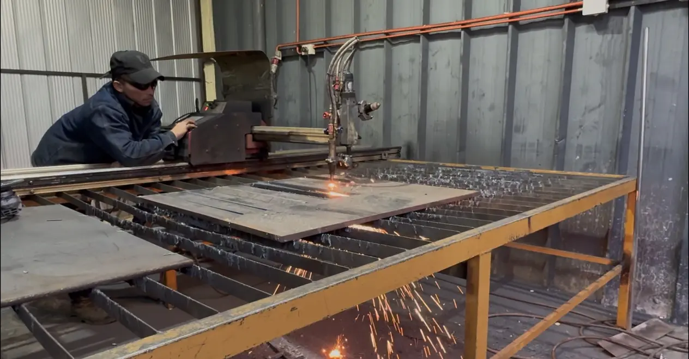

Mesa de corte plasma CNC con THC F1621
Sistema CNC para corte automatizado de planchas metálicas. MAQELEC trabaja con esta mesa, presta el servicio de corte y puede suministrar una configuración equivalente con instalación y soporte.
La propuesta se define según proceso, material, energía, accesorios y condiciones de instalación.
Una máquina documentada trabajando
La mesa plasma CNC desplaza la antorcha sobre una trayectoria programada para producir piezas y contornos en planchas metálicas conductoras. El sistema real fotografiado incorpora control numérico, pórtico móvil, fuente plasma y un controlador automático de altura F1621.
F1621 identifica específicamente el controlador THC, no el modelo completo de la mesa. Este componente mide la tensión del arco y ajusta en tiempo real la separación entre antorcha y material. El área útil, la fuente plasma, el amperaje, los motores y la capacidad de corte deben definirse para cada configuración.
Procesos que puede realizar
La capacidad efectiva depende del material, herramienta y configuración.
- Corte automatizado de contornos y piezas desde archivo CNC
- Trazados rectos, curvas, perforaciones y geometrías repetibles
- Producción de componentes para fabricación metalmecánica
- Control inicial y seguimiento automático de altura de antorcha
- Preparación de piezas para soldadura, armado y terminaciones
Especificaciones del modelo
Los datos publicados corresponden al controlador THC F1621. La mesa, la fuente plasma y su capacidad final deben confirmarse en cada propuesta.
- Sistema fotografiado
- Mesa de corte plasma CNC tipo pórtico
- Controlador de altura
- Fangling F1621 THC
- Principio de control
- Seguimiento por tensión de arco
- Tensión nominal del THC
- 24 VDC
- Rango nominal de alimentación
- 21,6–26,4 VDC
- Motor de elevación
- 24 VDC
- Accionamiento del motor
- PWM
- Corriente de salida
- 0–3 A
- Capacidad de carga
- 100 W
- Detección de altura inicial
- Proximidad o contacto del capuchón, según instalación
- Interfaz CNC
- Señales aisladas por optoacoplador
- Temperatura de trabajo THC
- 0–50 °C
- Humedad relativa
- 5–95 %
- Área útil de mesa
- Por confirmar en cada configuración
- Fuente plasma y amperaje
- Por confirmar según material y espesor
De la selección a la operación inicial
El alcance puede incorporar suministro, montaje, puesta en marcha, capacitación y soporte.
- Levantamiento de material, espesor, formato y producción
- Suministro local o gestión de importación del sistema
- Integración de mesa, fuente plasma, CNC y control de altura
- Instalación, puesta en marcha y pruebas de corte
- Capacitación inicial, soporte técnico y consumibles
Con material, medidas, producción y energía disponible podemos orientar la configuración.
Solicitar evaluación